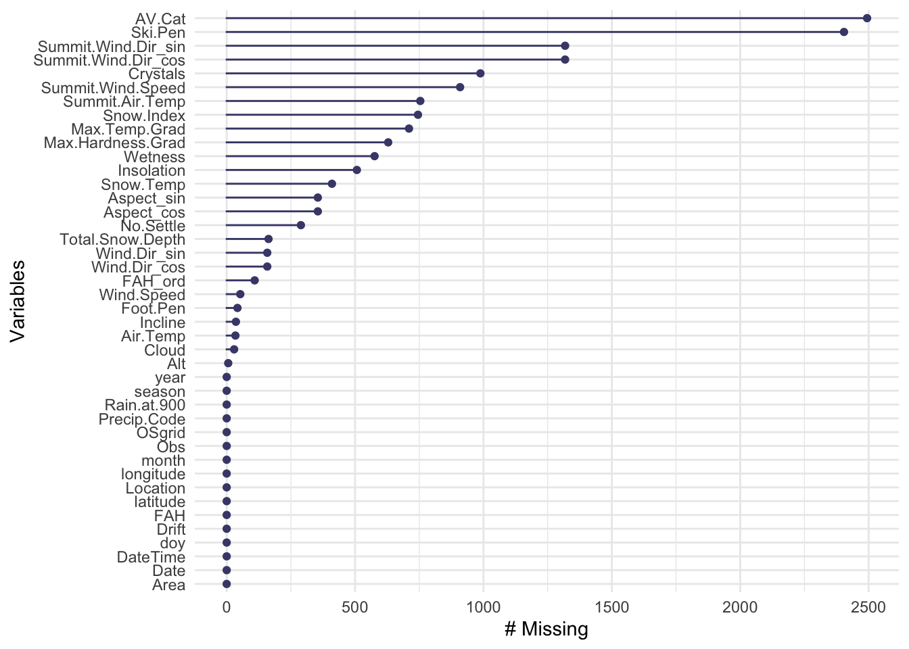
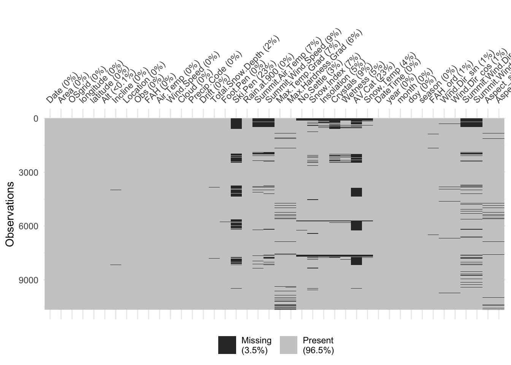

── Attaching core tidyverse packages ──────────────────────── tidyverse 2.0.0 ──
✔ dplyr 1.1.4 ✔ readr 2.1.5
✔ forcats 1.0.0 ✔ stringr 1.5.1
✔ ggplot2 3.5.1 ✔ tibble 3.2.1
✔ lubridate 1.9.4 ✔ tidyr 1.3.1
✔ purrr 1.0.4
── Conflicts ────────────────────────────────────────── tidyverse_conflicts() ──
✖ dplyr::filter() masks stats::filter()
✖ dplyr::lag() masks stats::lag()
ℹ Use the conflicted package (<http://conflicted.r-lib.org/>) to force all conflicts to become errors
Attaching package: 'janitor'
The following objects are masked from 'package:stats':
chisq.test, fisher.test
── Attaching packages ────────────────────────────────────── tidymodels 1.3.0 ──
✔ broom 1.0.7 ✔ rsample 1.2.1
✔ dials 1.4.0 ✔ tune 1.3.0
✔ infer 1.0.7 ✔ workflows 1.2.0
✔ modeldata 1.4.0 ✔ workflowsets 1.1.0
✔ parsnip 1.3.0 ✔ yardstick 1.3.2
✔ recipes 1.1.1
── Conflicts ───────────────────────────────────────── tidymodels_conflicts() ──
✖ scales::discard() masks purrr::discard()
✖ dplyr::filter() masks stats::filter()
✖ recipes::fixed() masks stringr::fixed()
✖ dplyr::lag() masks stats::lag()
✖ yardstick::spec() masks readr::spec()
✖ recipes::step() masks stats::step()Data Preparation and EDA
Investigate missing data
# quick checks
colnames(aval) [1] "Date" "Area" "OSgrid"
[4] "longitude" "latitude" "Alt"
[7] "Aspect" "Incline" "Location"
[10] "Obs" "FAH" "OAH"
[13] "Air.Temp" "Wind.Dir" "Wind.Speed"
[16] "Cloud" "Precip.Code" "Drift"
[19] "Total.Snow.Depth" "Foot.Pen" "Ski.Pen"
[22] "Rain.at.900" "Summit.Air.Temp" "Summit.Wind.Dir"
[25] "Summit.Wind.Speed" "Max.Temp.Grad" "Max.Hardness.Grad"
[28] "No.Settle" "Snow.Index" "Insolation"
[31] "Crystals" "Wetness" "AV.Cat"
[34] "Snow.Temp" colSums(is.na(aval)) # number of missing values in each column Date Area OSgrid longitude
0 0 0 0
latitude Alt Aspect Incline
0 6 355 36
Location Obs FAH OAH
0 0 0 369
Air.Temp Wind.Dir Wind.Speed Cloud
34 158 53 29
Precip.Code Drift Total.Snow.Depth Foot.Pen
0 0 163 42
Ski.Pen Rain.at.900 Summit.Air.Temp Summit.Wind.Dir
2404 0 754 1318
Summit.Wind.Speed Max.Temp.Grad Max.Hardness.Grad No.Settle
909 710 629 289
Snow.Index Insolation Crystals Wetness
745 507 988 576
AV.Cat Snow.Temp
2494 410 str(aval) # data type of each column'data.frame': 10671 obs. of 34 variables:
$ Date : chr "2009-12-17 12:30:00" "2009-12-18 13:15:00" "2009-12-19 13:15:00" "2009-12-20 12:50:00" ...
$ Area : chr "Creag Meagaidh" "Creag Meagaidh" "Creag Meagaidh" "Creag Meagaidh" ...
$ OSgrid : chr "NN460901" "NN442895" "NN448897" "NN463900" ...
$ longitude : num -4.54 -4.56 -4.55 -4.53 -4.55 ...
$ latitude : num 57 57 57 57 57 ...
$ Alt : int 800 890 NA 890 900 730 700 800 600 600 ...
$ Aspect : int 160 100 NA 130 100 155 150 130 190 120 ...
$ Incline : int 28 32 NA 39 33 31 35 25 20 28 ...
$ Location : chr "Cairn Liath" "Lifa Gully, Coire Chriochairein" "Wall gully,Coire Chreiochairein" "Balloon Gully" ...
$ Obs : chr "WS" "TR" "TR" "TR" ...
$ FAH : chr "Moderate" "Considerable -" "Considerable +" "Considerable +" ...
$ OAH : chr "Moderate" "Considerable +" "High" "Considerable +" ...
$ Air.Temp : num -3.2 -2.5 -5 -2 -2.6 -7.8 -0.5 -3 -1 -2 ...
$ Wind.Dir : num 45 340 NA 270 NA NA NA NA 45 45 ...
$ Wind.Speed : num 10 30 35 25 5 0 3 NA 5 2 ...
$ Cloud : int 90 100 100 60 90 0 100 10 2 20 ...
$ Precip.Code : chr "2 - Trace" "4 - Light Showers" "8 - Snow" "6 - Snow Showers" ...
$ Drift : int 1 1 1 1 1 0 1 0 1 0 ...
$ Total.Snow.Depth : int 45 40 65 75 80 64 60 52 41 42 ...
$ Foot.Pen : num 0 10 33 50 70 42 50 50 40 30 ...
$ Ski.Pen : int NA NA NA NA 25 30 20 NA NA NA ...
$ Rain.at.900 : int 0 0 0 0 0 0 0 0 0 0 ...
$ Summit.Air.Temp : num NA NA NA NA NA NA NA NA NA NA ...
$ Summit.Wind.Dir : int NA NA NA NA NA NA NA NA NA NA ...
$ Summit.Wind.Speed: int NA NA NA NA NA NA NA NA NA NA ...
$ Max.Temp.Grad : num 20 8 18 5 10 43 4 18 34 17 ...
$ Max.Hardness.Grad: int 4 2 2 2 2 2 2 3 3 3 ...
$ No.Settle : int NA NA NA NA NA NA NA NA NA NA ...
$ Snow.Index : int NA NA NA NA NA NA NA NA NA NA ...
$ Insolation : int NA NA NA NA NA NA NA NA NA NA ...
$ Crystals : int NA NA NA NA NA NA NA NA NA NA ...
$ Wetness : int NA NA NA NA NA NA NA NA NA NA ...
$ AV.Cat : int NA NA NA NA NA NA NA NA NA NA ...
$ Snow.Temp : num NA NA NA NA NA NA NA NA NA NA ...# remove OAH: observed avalanche hazard
aval <- aval %>% select(-OAH)# clean the data by casting variables as correct types
# STEP 1 — Fix types & engineer helper features (with OAH removed)
aval <- aval %>%
mutate(
# --- time features ---
DateTime = ymd_hms(Date, quiet = TRUE),
# strip out year, month and day:
Date = as.Date(DateTime),
year = year(Date),
month = month(Date),
doy = yday(Date),
# create a new variable: season
season = factor(case_when(
month %in% c(12,1,2) ~ "DJF",
month %in% c(3,4,5) ~ "MAM",
month %in% c(6,7,8) ~ "JJA",
TRUE ~ "SON"
), levels = c("DJF","MAM","JJA","SON")),
# --- categorical / IDs ---
Area = factor(Area),
OSgrid = as.character(OSgrid),
Location = as.character(Location),
Obs = factor(Obs),
# --- hazard (target) as ordered factor ---
FAH_ord = factor(
FAH,
# specify the following order:
levels = c("Low","Moderate","Considerable -","Considerable","Considerable +","High"),
ordered = TRUE
),
# --- circular encodings for angles ---
# since 0 degrees is equivalent to 360, we change these variables.
# ex. 350 is close to 0 directionally, but numerically far
# map angles onto unit circle
Wind.Dir_sin = sin(pi * Wind.Dir/180),
Wind.Dir_cos = cos(pi * Wind.Dir/180),
Summit.Wind.Dir_sin = sin(pi * Summit.Wind.Dir/180),
Summit.Wind.Dir_cos = cos(pi * Summit.Wind.Dir/180),
# aspect (if degrees)
Aspect_sin = sin(pi * Aspect/180),
Aspect_cos = cos(pi * Aspect/180)
)
# remove the original variables:
aval <- aval %>%
select(-Wind.Dir, -Summit.Wind.Dir, -Aspect) # drop originals# number of unique and missing values for each variable:
n_total <- nrow(aval)
var_summary <- aval %>%
summarise(across(
everything(),
list(
unique_vals = ~n_distinct(.),
missing_vals = ~sum(is.na(.))
),
.names = "{.col}__{.fn}" # <-- double underscore here
)) %>%
pivot_longer(
everything(),
names_to = c("variable", ".value"),
names_sep = "__" # <-- and the same separator here
) %>%
mutate(pct_missing = round(100 * missing_vals / n_total, 2)) %>%
arrange(desc(pct_missing), variable)
var_summary# A tibble: 42 × 4
variable unique_vals missing_vals pct_missing
<chr> <int> <int> <dbl>
1 AV.Cat 17 2494 23.4
2 Ski.Pen 29 2404 22.5
3 Summit.Wind.Dir_cos 322 1318 12.4
4 Summit.Wind.Dir_sin 323 1318 12.4
5 Crystals 10 988 9.26
6 Summit.Wind.Speed 144 909 8.52
7 Summit.Air.Temp 222 754 7.07
8 Snow.Index 57 745 6.98
9 Max.Temp.Grad 110 710 6.65
10 Max.Hardness.Grad 7 629 5.89
# ℹ 32 more rows# is long and lat constant within OSgrid?
aval %>%
group_by(OSgrid) %>%
summarise(n_coords = n_distinct(paste(longitude, latitude)), .groups = "drop") %>%
filter(n_coords > 1)# A tibble: 0 × 2
# ℹ 2 variables: OSgrid <chr>, n_coords <int># yes, thus long and lat is the coordinates of different sites, OSgrid
# is Alt the same within each OSgrid?
aval %>%
group_by(OSgrid) %>%
summarise(n_alt = n_distinct(Alt), .groups = "drop") %>%
filter(n_alt > 1)# A tibble: 1,271 × 2
OSgrid n_alt
<chr> <int>
1 NG773424 3
2 NG773426 2
3 NG774425 5
4 NG774426 2
5 NG777424 2
6 NG777425 4
7 NG778413 2
8 NG778415 2
9 NG779424 2
10 NG780424 2
# ℹ 1,261 more rows## no: cannot use Osgrid to impute missing Alt# Per-variable % missing
miss_summary <- aval %>%
summarise(across(
everything(),
~mean(is.na(.)) * 100
)) %>%
pivot_longer(everything(), names_to = "variable", values_to = "pct_missing") %>%
arrange(desc(pct_missing))
miss_summary# A tibble: 42 × 2
variable pct_missing
<chr> <dbl>
1 AV.Cat 23.4
2 Ski.Pen 22.5
3 Summit.Wind.Dir_sin 12.4
4 Summit.Wind.Dir_cos 12.4
5 Crystals 9.26
6 Summit.Wind.Speed 8.52
7 Summit.Air.Temp 7.07
8 Snow.Index 6.98
9 Max.Temp.Grad 6.65
10 Max.Hardness.Grad 5.89
# ℹ 32 more rows# Visual overview
naniar::gg_miss_var(aval)
naniar::vis_miss(aval)
From the above, only 10 variables have more than 5% of their values missing. Careful attention is paid to these below. The remaining variables have \(<5\%\) missing values and will simply be imputed with a K-Nearest Neighbor approach.
Of the variables missing more than 5%, we first need to determine if the missingness carries meaning. The list of variables is thus split in two, one where missingness does carry meaning and need to be accounted for and one where it does not.
The variables that do need to be accounted for and the method to account for it are: Those that do not need to be accounted for are:These variables will also be imputed with KNN.
unique(aval$AV.Cat) [1] NA 3 -2 2 1 4 8800 -1 0 1021 4400 -9999
[13] 99 88 44 5031 121unique(aval$Ski.Pen) [1] NA 25 30 20 15 10 7 9 12 23 5 1 40 6 8 50 -1 55 0 4 17 39 2 3 16
[26] 22 18 35 45todo - check for duplicates after imputing missing values. (noticed there are less unique dates than there are # obs)